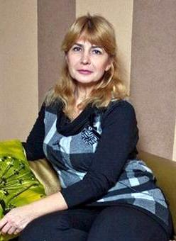

Fără intervenții chirurgicale sau injecții, la 51 de ani poți arăta ca la 35 - este adevărat!Știai că, datorită uleiului de măsline, în 61 de zile poți arăta cu 17 ani mai tânără? Bună ziua, dragi cititori! Continuăm rubrica noastră săptămânală “Vârsta nu este un impediment pentru frumusețe”, unde ne împărtășiți metodele voastre secrete de reîntinerire a pielii. Astăzi vom dezvălui secretul Mariei, care a făcut mare vâlvă în rețea și este unul dintre cele mai discutate pe forumurile despre frumusețe.  Povestea are un început trist - după 25 ani de mariaj, soțul Mariei a părăsit-o pe motiv că este bătrână. "Am fost deprimată timp de opt luni, plângeam într-una și renunțasem complet să mai am grijă de mine. Cearcănele și pungile de sub ochi au devenit mai mari, fața era mai ofilită, iar cutele nazolabiale au devenit mai adânci. Aveam 49 de ani, iar în viitor mă așteptau doar singurătatea și bătrânețea" își amintește Maria. Suntem uimiți mereu de tenacitatea incredibilă a eroinelor noastre. Crezi că Maria s-a lăsat pradă bătrâneții? Cu siguranță, nu! A decis să își recâștige frumusețea cu orice preț. "Am crescut în vremuri în care nu existau tratamente cu botox, nu existau operații estetice sau alte proceduri. În vremurile acelea, femeile mature arătau foarte bine fără toate aceste inovații. Eram sigură că există o modalitate de recâștigare a tinereții fără aceste proceduri periculoase și costisitoare" - spune Maria. În 5 luni a încercat totul: peelinguri, măști, loțiuni, seruri, exerciții și masaje. Dar toate acestea aveau un efect abia vizibil sau erau complet ineficiente. Maria s-a adresat unui dermatolog, dar nu și-a permis să plătească procedura propusă. "Eram disperată că nimic nu mă ajută. Pe când încercam o metodă nouă, eram pregătită să renunț, dar nu am făcut-o. Și a meritat! La un moment dat, vorbeam cu o funcționară și a recunoscut că avea 45 de ani, deși, după aspect, i-aș fi dat maximum 30. Mi-a spus care era metoda ei, pe care o folosea zilnic de 17 ani. Această mască are la bază Alginatos, biocomplejo de extractos de plantas, limo de diatomeas, Panta Altai maral, colágeno marino.. Zilnic, timp de 4 ore, încălzeam acest amestec, îl aplicam pe față și îl masam. După 14 zile, am fost pur și simplu șocată de rezultate - ridurile s-au netezit. După două luni, arătam cu 10 ani mai tânără! După încă o lună, ridurile din jurul ochilor și cutele nazolabiale au devenit aproape invizibile. După mulți ani, îmi simțeam din nou frumusețea și am început să primesc complimente de la ceilalți. Eram atât de fericită! Dar masca avea și dezavantaje - trebuia să o ții timp îndelungat pe față și era foarte dificil de îndepărtat. Zilnic, Maria petrecea câte 30 minute cu pregătirea amestecului, îl ținea câte 5 ore pe față și mai petrecea o oră pentru a-l îndepărta. Dar frumusețea, după cum se spune, cere sacrificii. Fiica mea a încercat și ea masca, dar nu a avut răbdare să o facă zilnic atât de mult timp. La un moment dat, călătorea într-o stațiune pentru tratamente anti-îmbătrânire. Acolo a vorbit despre această mască cu un dermatolog, iar acesta i-a confirmat că elementele conținute de mască întineresc chiar și pielea îmbătrânită. A spus că există o mascarilla, Algonika, care conține aceeași substanță ca masca mea. Dar mascarilla este mai comod de folosit - nu trebuie decât să o aplici înainte de culcare. Am înjurat când a cumpărat câteva cutii de Algonika din Israel. Mi se părea că dermatologul nu făcuse decât să o convingă să cheltuiască banii. Dar, după un timp, am observat că, după folosire, deși avea 31 de ani, tenul ei nu avea niciun rid. Așa că m-am hotărât să o încerc. Această mascarilla a fost chiar mai eficientă decât masca - după 23 de zile, toate ridurile au dispărut, iar tenul meu a căpătat un aspect mult mai neted. Era o victorie! Acum, în loc să stau cu masca pe față acasă, participam la evenimente interesante și mergeam în locuri interesante. Mi-am făcut atât de mulți fani și nu mai eram nici măcar tânără! Din păcate, acesta nu a fost finalul fericit și necazurile au pus din nou stăpânire. Scria despre toate încercările ei de reîntinerire pe blog, care avea peste 500.000 de abonați. Când a scris o postare despre Algonika a primit o mulțime de amenințări, care îi cereau să șteargă informațiile despre produs. Proprietarii clinicilor de chirurgie plastică nu doreau ca femeile să afle despre o metodă mai simplă și mai ieftină de întinerire. Mira a fost nevoită să renunțe la blog, pentru siguranță. Lumea este condusă de bani, deoarece sunt multe persoane lacome care vor să se îmbogățească peste noapte. Eu sunt o femeie slabă și nu mă pot lupta cu sistemul. Este păcat că a trebuit să renunț la blog, dar, în același timp, nu aș avea timp să mă ocup de el: în primul rând, datorită blogului meu, reprezentanții oficiali ai Algonika mi-au oferit o slujbă. În al doilea rând, m-am căsătorit, așa că îmi petrec tot timpul meu liber cu cel mai bun bărbat din lume. Sunt foarte recunoscătoare tuturor celor care mi-au citit blogul, susținându-mi și împărtășindu-mi rețetele. Mulțumită vouă, tuturor, nu m-am abătut de la drumul meu și, în sfârșit, sunt fericită." - comentează eroina noastră. Astăzi, Maria continuă să lucreze cu echipa Algonika , care a ajutat 985.967 de femei din întreaga lume să își recapete tenul tânăr. Și, zilnic, acest număr crește. Probabil că misiunea fiecărei persoane este să devină mai bună și să îi ajute și pe alții să facă acest lucru. După o căutare îndelungată și dureroasă, am găsit remediul întineririi în cel mai scurt timp Algonika. Deci, merită să cheltuiești sume enorme pentru injecțiile dureroase cu botox sau pentru operațiile periculoase sau alte remedii costisitoare? Există o metodă ieftină și ușoară prin care se poate obține același efect. Voi decideți, dragi cititoare. Cine dorește să încerce Algonika îl poate comanda dând clic pe butonul de mai jos. Ne luăm la revedere până săptămână viitoare. Toate cele bune și, nu uitați, principala frumusețe se află în interiorul vostru. TOATE COMENTARIILE În sfârșit, am găsit Algonika ! Am primit-o odată cadou de ziua mea. Am început să o folosesc și m-am îndrăgostit imediat de ea! Ridurile s-au netezit într-o săptămână, pielea a devenit fină și hidratată. Când am căutat-o în magazine pentru a o cumpăra, nu am găsit-o. Acum am comandat trei cutii. mascarilla este prea bună. Sunt de acord 100%, saloanele de înfrumusețare ne scutură de bani pentru remedii costisitoare. Există remedii similare, dar mai ieftine. Am fost șocată când, după o săptămână, pungile și cearcănele de sub ochi au dispărut complet. Iată o fotografie. Fetelor, este un remediu magic! Când mascarilla încă nu era scoasă la vânzare, am fost una dintre cele 100 de voluntare care au fost de acord să o testeze. Rezultatele sunt uimitoare! - 15 ani în numai 21 de zile… Am încercat această mască cu ulei de măsline, dar nu am avut răbdare să o aplic zilnic și să stau câte 4 ore cu ea pe față. Voi comanda Algonika pentru că vreau să o încerc. Fetelor, bună! Am fost cosmeticiană 27 de ani. Și sunt obligată să recunosc că multe clinici de înfrumusețare nu spun nimic despre metodele disponibile de întinerire, din motive financiare. Algonika conține elementele necesare tenului matur: colagen, acid hialuronic și multe alte elemente. Combinația acestor elemente vă va ajuta să vă mențineți tinerețea mulți ani de acum înainte! O recomand! |

Ela
Povestea ta m-a inspirat! Maria, arăți uimitor! Am comandat mascarilla. Abia aștept să o primesc.